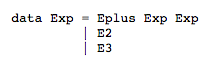

Defined by a committed in 1990
(committed formed at the Functional Programming Languages and Computer Architecture Conference '87)
- Named for Haskell Brooks Curry
Background
Technical Aspect
Strong Static Typing
- Instances of a type cannot be cast into another type
- The type of every expression and every variable is known at compile time

Technical Aspect
Either
String a

Technical Aspect
“parts” of Haskell
Abstract syntax can be expressed as algebraic datatypes
